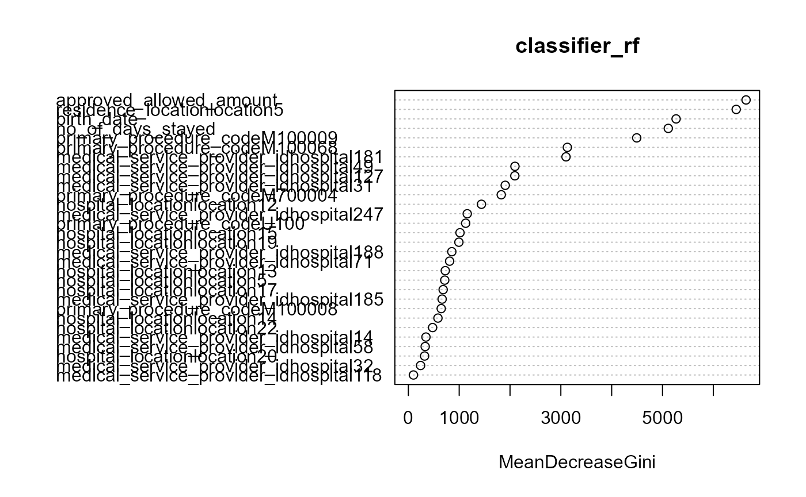
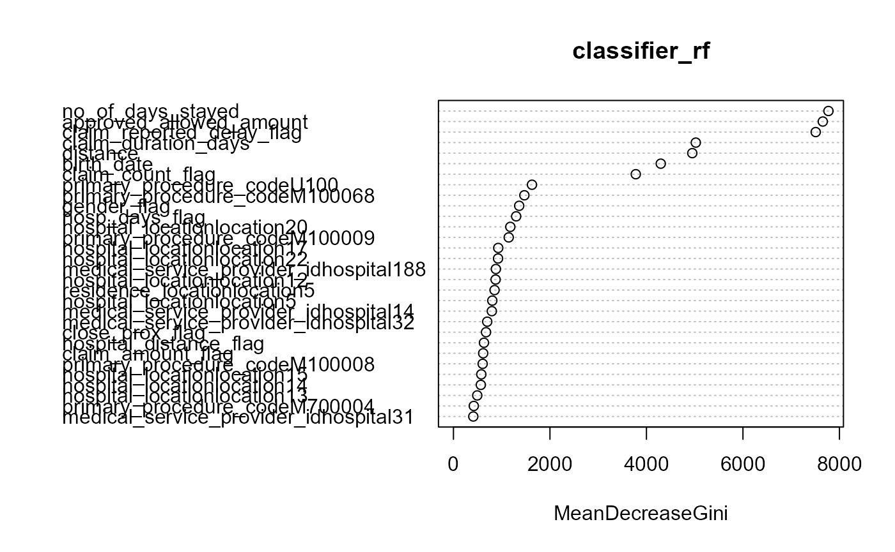
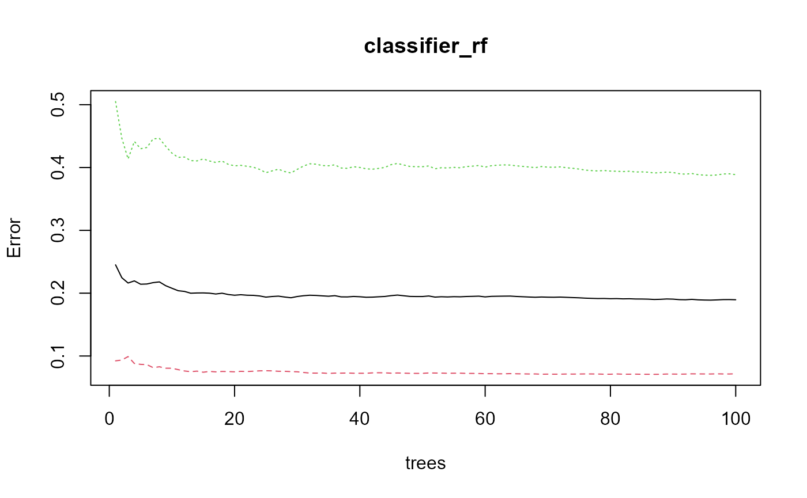
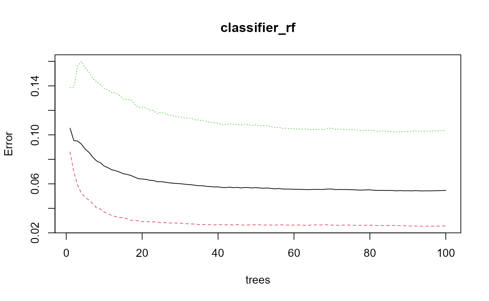
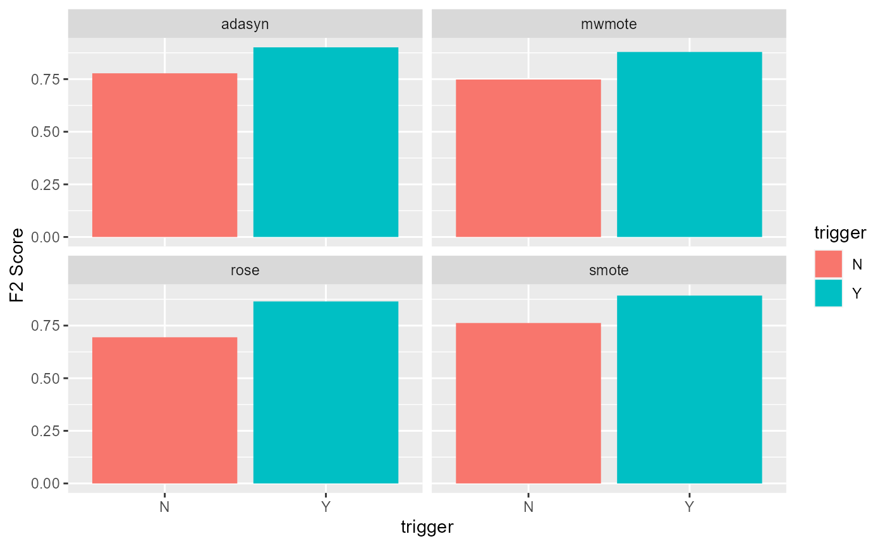

Fraud Classification with Random Forest
06_fraud_classification_random_forest.RmdImproving fit of a Random Forest model
One can add triggers to a standard claims dataset to improve your model’s predictability of fraud. We illustrate this using a random forest model in this vignette. In the data pre-processing vignette, we treated the data imbalance in claims data using 4 different types of data imbalance techniques - ADASYN, SMOTE, MWMOTE and ROSE.
Random Forest is an ensemble supervised learning algorithm used for classification and regression. In this scenario we are using it for a binary classification problem. The random forest algorithm is a way to make predictions based on many decision trees.
It creates multiple decision trees by randomly selecting subsets of the data and features. Then, each tree is trained on a different subset of the data and features, and when a new data point is presented, each tree predicts the class label independently. Finally, the predictions of all the trees are combined to get the final prediction. Random forest is often used to improve the performance and reduce overfitting of decision trees.
Creating random forest model function
We create a function for implementing the Random Forest model in order to easily apply it on the various datasets.
The function takes two arguments: train dataset and test dataset.
The response variable is “fraud” and all other variables are considered as predictor variables.
Overall this function fits a Random Forest model for binary classification of fraud or non-fraud and evaluates its performance using various metrics.
F2 score is used as the most appropriate metric to compare the model-fit results. This is because we want to improve identification of fraud.
It also produces plots of the random forest model’s performance and variable importance.
random_forest <- function(data_train, data_test) {
# train the random forest model
classifier_rf <-
randomForest(fraud ~ ., data = data_train, ntree = 100)
# predict probabilities on the test set
y_prob <-
predict(classifier_rf, newdata = data_test, type = "prob")[, 2]
# calculate ROC AUC and PR AUC
roc_obj <- roc(data_test$fraud, y_prob)
pr_obj <-
pr.curve(scores.class0 = y_prob,
weights.class0 = ifelse(data_test$fraud == "1", 1, 0))
# determine threshold using ROC curve
threshold <- coords(roc_obj, "best")[[1]]
# classify test set based on threshold
y_pred <- ifelse(y_prob > threshold, 1, 0)
# Confusion Matrix
c1 <-
confusionMatrix(data_test$fraud,
as.factor(y_pred),
mode = "everything",
positive = "1")
c <-
rbind(c1,
c(
paste0("RF ", deparse(substitute(data_train))),
c1$overall[1],
c1$byClass[c(1, 2, 5, 6, 7)],
roc_obj$auc,
pr_obj$auc.integral
))
# Plotting model
plot(classifier_rf)
# Importance plot
importance(classifier_rf)
# Variable importance plot
varImpPlot(classifier_rf, top = 10)
c <- as.data.frame(c[-1, ])
colnames(c)[1] = "Method+dataset"
colnames(c)[8] = "ROC-AUC"
colnames(c)[9] = "PR-AUC"
c <-
c %>%
mutate(
across(.cols = -`Method+dataset`, .fns = as.numeric),
trigger = ifelse(stringr::str_detect(`Method+dataset`, "wo"), "N", "Y")
) %>%
separate(`Method+dataset`, c("method", "NA_1"), " ", remove = TRUE) %>%
separate(NA_1, c("imbalance", NA, NA)) %>%
mutate(`F2 Score` = ((1 + 2^2) * Precision * Recall) / (2^2 * Precision + Recall)) %>%
select(method, imbalance,trigger ,`F2 Score`)
return(c)
}Applying the function to the datasets
The function is now applied to each of the datasets which are adjusted for the data imbalance using the ADASYN, SMOTE, MWMOTE and ROSE.
In brief about these methods:
ADASYN(Adaptive Synthetic Sampling) generates synthetic data points for the minority class in imbalanced datasets, creating more samples in underrepresented regions to improve model performance.
SMOTE (Synthetic Minority Over-sampling Technique) generates synthetic data points for the minority class in imbalanced datasets by interpolating between minority class examples to create new samples.
MWMOTE(Majority Weighted Minority Oversampling Technique) is a modification of SMOTE that aims to address the issue of noisy examples by adding a weighting factor to each minority class example based on its level of noise.
ROSE (Random Over-Sampling Examples) generates synthetic data points for the minority class by randomly selecting a sample from the minority class.
ADASYN
adasyn_wo_triggers <-
random_forest(adasyn_wo_triggers_train,
adasyn_wo_triggers_test)
adasyn_w_triggers <-
random_forest(adasyn_w_triggers_train,
adasyn_w_triggers_test)
SMOTE
smote_wo_triggers <-
random_forest(smote_wo_triggers_train,
smote_wo_triggers_test)
smote_w_triggers <-
random_forest(smote_w_triggers_train,
smote_w_triggers_test)

Results comparison
bind_rows(
adasyn_wo_triggers,
adasyn_w_triggers,
smote_wo_triggers,
smote_w_triggers,
mwmote_wo_triggers,
mwmote_w_triggers,
rose_wo_triggers,
rose_w_triggers
) %>%
select(imbalance, trigger, everything()) %>%
ggplot() +
geom_bar(aes(x = trigger, y = `F2 Score`, fill = trigger), stat='identity') +
facet_wrap(~imbalance)
As can be seen from the above charts, the models with the trigger fields have shown better predictability compared to those without triggers.